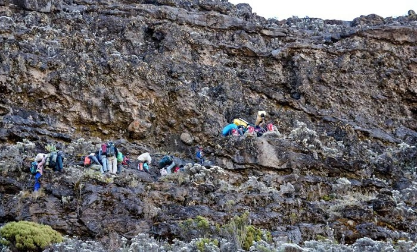
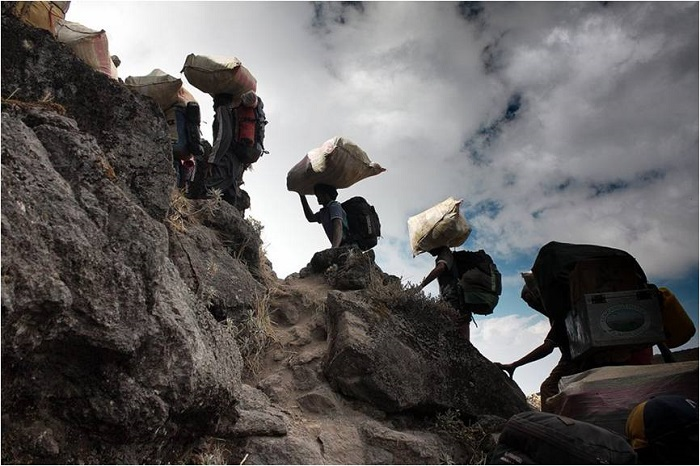

想去爬乞力马扎罗山或者已经爬过乞力马扎罗山的童鞋都会对一个地方印象格外深刻，那就是巴兰科墙。 巴兰科墙可以说是乞力马扎罗山中一段让你从身体到内心都印象深刻的路段，今天我们来说说它。
一张图感受巴兰科墙的“陡”（来源：tusker）
那些年，我们一起爬的墙
巴兰科墙高约257米，它位于乞力马扎罗山南部海拔约3900米的地方。虽说它所处的海拔并不高，但因为它是乞力马扎罗山所有路段中少有的较为陡峭且需要四肢并用爬上去的路段，所以在登山者中开始渐渐有名起来。
不是闹着玩儿的，但也不是完全不能玩儿
想想看257米，高吗？好像也不是特别高！可就是看着吓人！怎么回事？ 每座“大规模”的山峰都有种巨兽般的气场，那种气场盘踞在山体的周围，它让你还未开始攀登就开始感到害怕。七大顶峰中排名第一的珠穆朗玛峰便极具这种“气场”，排名第二的阿空加瓜峰也有，排名第四的乞力马扎罗也不例外。
在乞力马扎罗，这种大山特有的气场和巴兰科墙之“陡“的混搭会让你不由自主地觉得到达顶部是可望而不可及的事。而事实上，巴兰科墙不过是只”纸老虎”。只要你一心向上、眼前只有你所追逐的那个高度，再陡路你便也不觉得陡了(好像有点儿“鸡汤”，不过是事实哦)。
如果你还是怕，没关系，小爱还有个办法。那就是……绕路咯。
因为巴兰科墙在乞力马扎罗南部，只有走希拉、莱莫绍、马莎美和翁背路线的童鞋才需要攀登巴兰科墙，所以你如果不走以上路线就可以完全避开巴兰科墙啦（不想“翻墙”的同学请果断选择北麓环线、马兰谷或者朗盖吧）。
一些“翻墙”秘诀
- 相信自己，相信向导。表慌，听从向导的指挥，踏踏实实走好每一步路。
- 慢X3。正所谓“千里之行，始于足下”，再难走的路也是一小步一小步地走出来的。放慢速度，稳扎稳打，如此反复，你便能成功占领高地（听上去似乎也是人生的哲理呢）。
- 四肢并用。由于巴兰科墙路段比较陡，此时登山杖就基本没用了，帮到你反而是碍事。
- 不要向下看X3（向下看容易晕，从而带来坠落的危险）。
（来源：wanderlustandsparkles）
最后，小爱想说的是走的费劲的时候看看你身边的挑夫们，他们扛着大包都能上去的路段，你背着个小背包还能上不去不成？
谨以此图致敬乞力马扎罗山上的挑夫们（来源：ukwreckdiver，deviantart.com）
如果你觉得这篇博客有趣而且对你有帮助，请分享给你的朋友， 让他们也一起涨姿势哦。